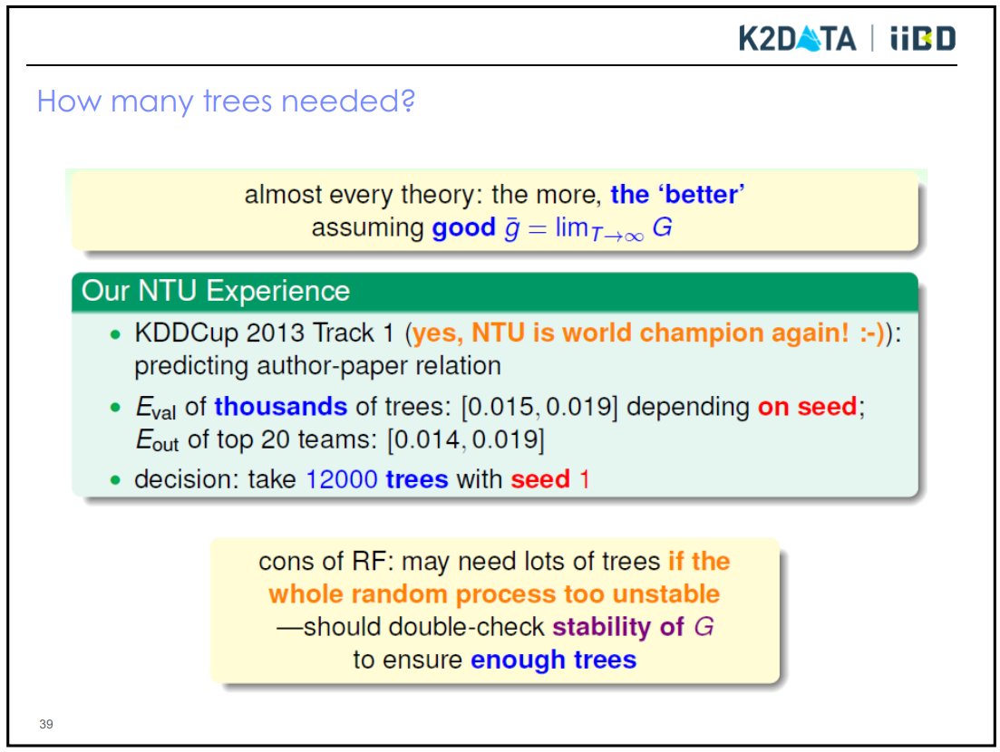

集成学习综述¶
参考了 https://mp.weixin.qq.com/s?__biz=MzU4MjQ3MDkwNA==&mid=2247487678&idx=1&sn=3645f3976aac5ca1bad1bc5b759b9dbe&chksm=fdb68d29cac1043f5084379ae76f34be2d2904da91344da24e0036f4396c9f64862407064907&mpshare=1&scene=1&srcid=0429sSKWFSfQmu1SGlVFdHnV&key=904260214fdf0829f5622800d9fdec635b0c82e922e4c560881c964f34f81cb6e995a61f23764e79f4fd15e41064f3450d77673214b4510bb6d7eada94ef8af93a1d8fd66e0a408bea05406bae390082&ascene=1&uin=MTIyNzMwNjMwMg%3D%3D&devicetype=Windows+10&version=62060739&lang=zh_CN&pass_ticket=WbJ%2Fl0UlM1RoyxCN9U4yMm4cKIWCROiiZksru8UI90Ez4j%2FZV4wjCIlfe%2Bk7MqZk
基础：决策树
Bagging
随机森林
Boosting
AdaBoost
GBDT
XGBoost
决策树¶
总体思想¶
依次选择单个特征（可以是连续，也可以是离散）对数据进行划分，将整个被划分的特征空间（决定性地或以一定概率）映射到目标变量（可以是连续，也可以是离散）空间中。
当以依概率映射来理解时，决策树实质上是一个条件概率分布。理论上，通过极大似然可以找到最优的特征空间的划分，由于最优决策树是NP完全问题，通常采用启发式方法找到相对较好的特征划分方法。
决策树与其他监督学习方法的区别在于，其特征划分的边界都是与坐标轴平行的线段（线段组合起来也可以足够复杂）。
决策树3步骤：特征选择、树生成、剪枝。
特征选择¶
ID3：特征选择用信息增益（最大），要求特征是离散的（如果不是离散，则对其进行划分，原始论文中只考虑了离散）。目标变量只能是离散的。
C4.5：特征选择用信息增益比（最大），也要求特征是离散的（如果不是离散，则对其进行划分，原始论文中考虑了两种，也可以是混合）。目标变量只能是离散的。
CART：
回归：平方误差最小。
分类：特征选择用基尼指数（最小）。
无论特征是连续还是离散，都需要将样本分为2类，继续计算平方误差或基尼指数，因而对CART来说，不区分特征是否是离散的，只区分目标变量是连续还是离散的，即只区分分类还是回归。特征可以是连续也可以是离散，目标变量同样既可以连续也可以离散。
CART算法不同之处在于，每次只分为2叉树：
对于回归，它除了确定特征，还要确定特征的划分点（暴力搜索）
对于分类，除了确定特征，还确定特征的取值（作为划分点）
剪枝¶
简单剪枝：以整棵树的经验熵作为训练误差，树的叶节点个数作为正则项，整体作为损失函数，参数alpha为正则项系数。对树从叶节点开始剪枝，如果剪枝后损失函数确实可以下降，则实施剪枝。
CART中的剪枝：整棵树的基尼指数作为训练误差，树的叶节点个数作为正则项，整体为损失函数。实施所有剪枝，形成一系列的树，通过交叉验证选择最优的树。
alpha越大，越倾向于简单的树，alpha无穷大时，根节点最优。alpha越小，越倾向于复杂的树，alpha为0时，不剪枝最优。
缺失值问题¶
某些情况下样本特征向量中一些分量没有值，这称为属性缺失。例如晚上我们无法观察到物体的颜色值，颜色属性就缺失了。在决策树的训练过程中，寻找最佳分裂时如果某一个属性上有些样本有属性缺失，可以把这些缺失该属性的样本剔除掉，然后照常训练，这是最简单的做法。
除此之外还可以使用替代分裂规则。对于每个决策树节点除了计算出一个最佳分裂规则作为主分裂规则，还会生成一个或者多个替代分裂规则作为备选。在预测时如果主分裂规则对应的特征出现缺失，则使用替代分裂规则进行判定。需要注意的是，替代分裂对于分类问题和回归问题是做相同的处理。
现在的关键问题是怎样生成替代分裂规则。主分裂和替代分裂对所有样本的分裂结果有4种情况，分别是：
LL, LR, RL, RR
LL表示被主分裂、替代分裂都分到了左子树的样本数。LR表示被主分裂分到了左子树，被替代分裂分到了右子树的样本数。RL表示被主分裂分到了右子树，被替代分裂分到了左子树的样本数。RR表示被主分裂和替代分裂都分到了右子树的样本数。
因此LL+RR是被替代分裂正确分类的样本数，LR+RL是被替代分裂错分的样本数。由于可以将左右子树反过来，因此给定一个特征分量，在寻找替代分裂的分裂阈值时要让LL+RR或者LR+RL最大化，最后取它们的最大值：
max(LL + RR, LR + RL)
该值对应的分裂阈值为替代分裂的分裂阈值。对于除最佳分裂所用特征之外的其他所有特征，都找出该特征的最佳分裂和上面的值。最后取该值最大的那个特征和分裂阈值作为替代分裂规则。
随机森林¶
Bootstrap抽样的做法是在n个样本的集合中有放回的抽取n个样本形成一个数据集。如果样本量很大，在整个抽样过程中每个样本有0.368的概率不被抽中。这部分样本称为包外（Out Of Bag，简称OOB）数据。
Bagging（Bootstrap Aggregating）算法：这种方法对训练样本集进行多次Bootstrap抽样，用每次抽样形成的数据集训练一个弱学习器模型，得到多个独立的弱学习器（对于分类问题，称为弱分类器），最后用它们的组合进行预测。
Bagging算法是一个抽象的框架，并没有指明每个弱学习器是什么类型的。如果弱学习器是决策树，这种方法就是随机森林。在训练决策树的每个节点时所用的特征也是随机抽样得到的，即从特征向量中随机抽出部分特征参与训练。
使用多棵决策树联合进行预测可以有效降低模型的方差。树的数目选择：上百到上万。(sklearn默认为100)

变量重要度：使用袋外数据计算第\(j\)棵决策树的校验误差 \(E_j\)，随机打乱袋外数据的第\(i\)个待评估特征并再次计算第j棵决策树的校验误差 \(E_{ij}'\)，两者相减求平方和得 \(f_i=\Sigma_j^n (E_{ij}'-E_j )^2\)，n为决策树个数， \(f_i\)可以作为单个特征重要性参考值，即值越大打乱特征的影响越大，该特征越重要。而该方法中涉及到的对数据进行打乱的方法通常有两种： 1）是使用uniform或者gaussian抽取随机值替换原特征； 2）是通过permutation的方式将原来的所有N个样本的第 i 个特征值重新打乱分布（相当于重新洗牌）。
sklearn中的特征数设定：
max_features : int, float, string or None, optional (default=”auto”) The number of features to consider when looking for the best split:
If int, then consider max_features features at each split. If float, then max_features is a fraction and int(max_features * n_features) features are considered at each split. If “auto”, then max_features=sqrt(n_features). If “sqrt”, then max_features=sqrt(n_features) (same as “auto”). If “log2”, then max_features=log2(n_features). If None, then max_features=n_features.
通常特征数寻优的设定：
A common suggestion is to start with 5 values evenly spaced across the range from 2 to p（从2到所有特征数之间找5个点）
AdaBoost¶
要素¶
对训练样本赋予权值，被正确分类的样本权值低，被错误分类的样本权值高；
对训练模型赋予权值，正确率高的模型权值高；
顺序迭代，生成M个分类器（模型权值在迭代过程中不起决定性作用）
最终分类器由各分类器加权获得（投票）
主要是为了降低偏差。（可能增加方差而过拟合）
标准的AdaBoost算法只能用于二分类问题，它的改进型可以用于多类分类问题
Boosting作为一种抽象框架很早就被提出，但一直没有很好的具体实现。AdaBoost算法（Adaptive Boosting，自适应Boosting）是Boosting算法的一种实现版本。
GBDT（Gradient Boosting Decision Tree，梯度提升树）¶
和AdaBoost算法类似，GBDT（Gradient Boosting Decision Tree，梯度提升树）[15]也是提升算法的一种实现，将决策树用于梯度提升框架，依次训练每一棵决策树。
要素¶
顺次训练多棵树
用损失函数对模型的负梯度来近似表达模型的残差，下一棵树对残差进行拟合
最终模型为所有模型之和
XGBoost¶
XGBoost是对梯度提升算法的改进。XGBoost对损失函数进行了改进，由两部分构成，第一部分为梯度提升算法的损失函数，第二部分为正则化项。
正则化项由两部分构成
其中T是决策树的叶子节点数，代表了树的规模；W是决策树所有叶子节点的预测值构成的向量。
求解目标函数极小值时，对目标函数做二阶泰勒展开，得到
其中，gi是损失函数对yit −1的一阶导数值，hi为损失函数对yit −1的二阶导数值。
然后用类似牛顿法的方式进行迭代。在训练决策树时，还采用了类似于随机森林的策略，对特征向量的分量进行抽样。
特征重要度¶
https://cloud.tencent.com/developer/article/1081625